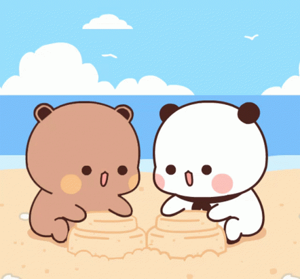
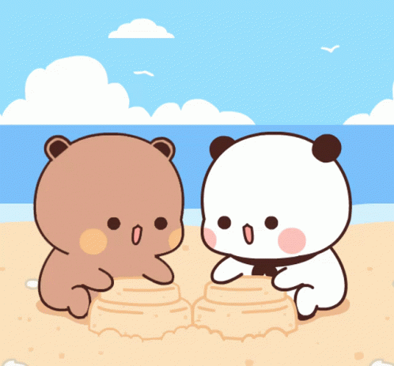

Sentuh LOVEnya!
 



Hi Princess.. from the moment our paths crossed, I never imagined someone could accept me for everything I am—punk, jamet, and all the quirks that come with it. You’ve embraced me completely, and that’s something I’ll always cherish.
In moments of chaos, you’ve been the calm. Never judging, just understanding. Your love isn’t just for my best moments, it’s for every piece of me, and that means everything.
We’ve been through a lot—good and bad—but no matter what, you’ve been the one I can always count on. You've been my constant support, my rock
We’ve had our fights, the times when we didn’t see eye to eye. But you always understood, listened, and helped me grow. You’ve made me better in ways I didn’t expect.
You’ve shown me what love really is—what it means to communicate openly, to heal, to grow together. You make me a better version of myself every single day.
Each day with you feels like a new adventure. Whether it's chaotic or peaceful, it’s better with you by my side. You’ve made even the toughest times feel worthwhile
With you, I’m not afraid to be myself. You bring out the best in me, and for that, I’ll always be grateful. You make me feel like I’m enough, just as I am
We may not be perfect, but we’re perfect for each other. And I wouldn’t change a single thing about us. We fit together like pieces of a puzzle, no matter how unconventional.
In those moments when everything seems uncertain, your laughter always brings me back. You have a way of making everything better, even without saying a word
Thank you for being you—the person who understands me like no one else. The one who makes every day brighter. Happy Anniversary, my love. Here's to us and to many more beautiful moments together.
Klik untuk Geser!
Happy 2nd mensiversary, Princess. Two months might not seem like a long time, but every moment with you feels so special, so full of warmth and joy. I love how we laugh together, how we understand each other in ways words can't explain, and how every day with you feels like a new adventure. I hope as time goes on, we grow even closer, stronger, and happier. May our love continue to bloom like your favorite flowers—beautiful, vibrant, and full of life. No matter what happens, I want us to always choose each other, to always fight for what we have. Here’s to more silly jokes, deep conversations, and late-night talks. To more hugs, more "I love you’s," and more memories that we’ll cherish forever. Thank you for being you, for being with me. Let’s keep making this love story ours.
I love you, always and forever. ü§ç